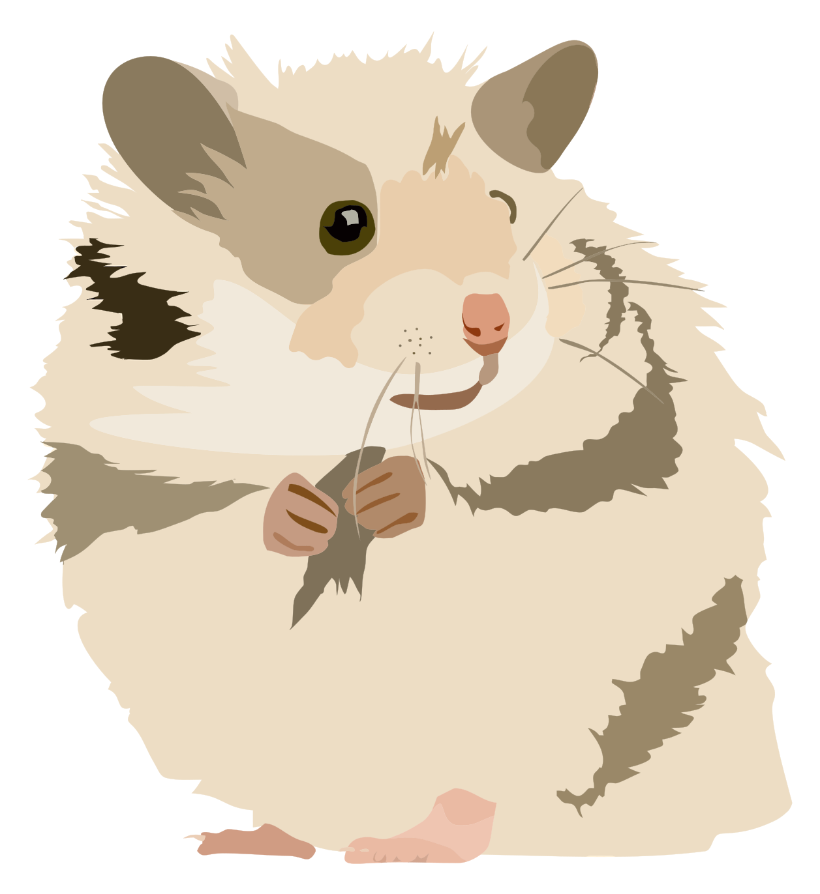

About
Hi, my name is Anton Popov! I now live in Krakow (that's Poland if anything, KURWA BOBER all things you know)I started to learn html and css back in 2020, or maybe even earlier, I do not remember. I definitely learned about the school in 2020 and immediately went from scratch to STAGE 1. It was difficult, I got to an interview with a mentor and then I had to stop learning because of problems.
After that I studied on my own solving level 8 problems with CODEWARS and after a while I went back to studying because I couldn't do without programming at all. I came back in 2022 for Stage 0 and got my certificate =) It was easy for me because I had some experience in page design and it was just a consolidation of what I had learned and then I went to stage 1 and I finished that pretty well too! I learned a lot in Stage 2 but unfortunately I was silly enough to send a mate too much of my code and was banned for "copying" it, although I did it all myself but that's ok.
I now have the experience that I have to help other guys right too. It is very frustrating that a lot of tasks will have to do over again, but it is a very good opportunity to polish your code without doing everything from scratch. Hopefully it won't be the third time I have to layout Shelter ahahha.
My skills
I will count my skills in hamsters, if you do not mind-
Vs code

-
GIT
-
HTML
-
CSS
-
JAVA SCRIPT
-
NODE.JS
-
TYPESCRIPT
-
FIGMA
-
ADOBE PHOTOSHOP
-
DEEPL
Why was I there?
Secondary School №28,minsk
music school №8
Glinka College of Music
-
Door and furniture restoration course
-
2020 - rs schools course "javascript/front-end"
2022 epam upskill me
-
2023- rs schools course "javascript/front-end pre-school(Stage#0)"
certificate -
2023 - 2023 - RS Schools Course JavaScript/Front-end Stage#1 completed.
-
2023 - 2023 - RS Schools Course JavaScript/Front-end Stage#2 40/60 tasks done.
My experience
Code Example
My code can be seen in the tasks I have done here: core-js-101 basic-js or see that super perfect-shmerfect code from CODEWARS with extra junior developer if-else code
function basicOp (operation, value1, value2){
if(operation==="+"){
let result = value1+value2;
return result;
}else if(operation==="-"){
let result = value1-value2;
return result;
}else if(operation==="*"){
let result = value1*value2;
return result;
}else if(operation==="/"){
let result = value1/value2;
return result;
}
languages
- English
- Polish
- Russian
- Belarusian
Contacts
- Telegram: @WidthDoctor
- Discord: WidthDoctor#7110